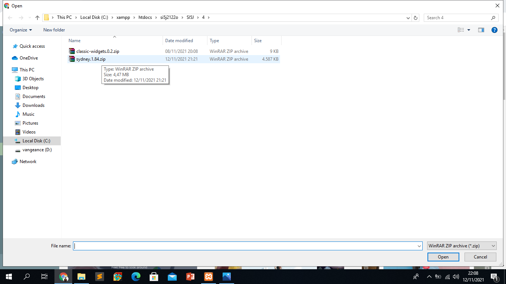
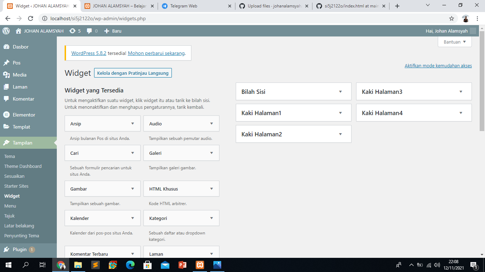
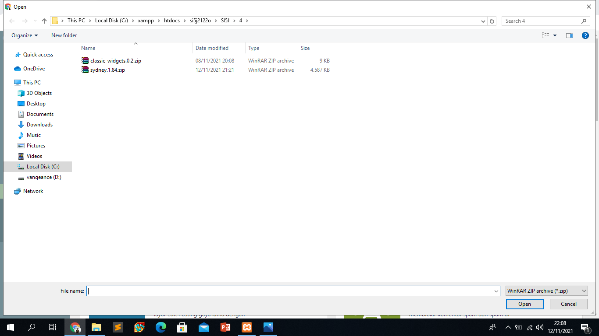
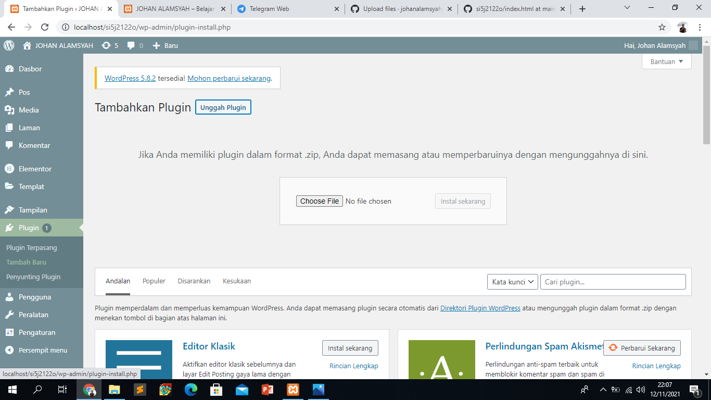
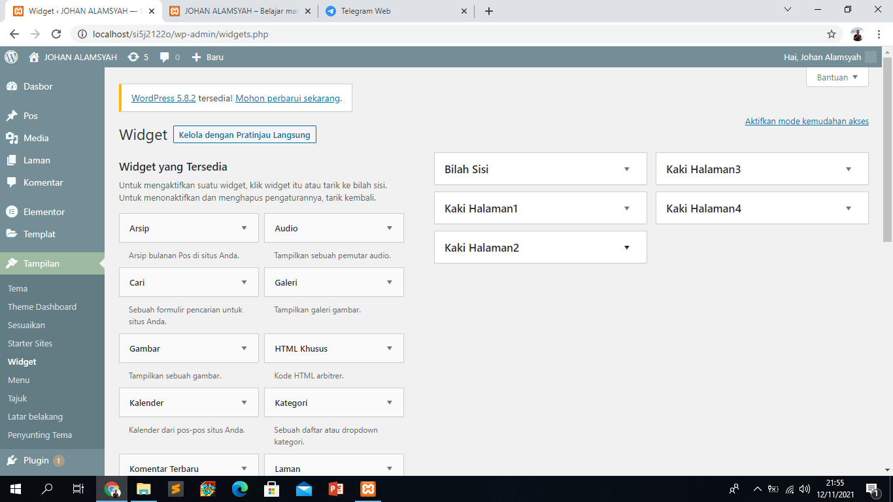
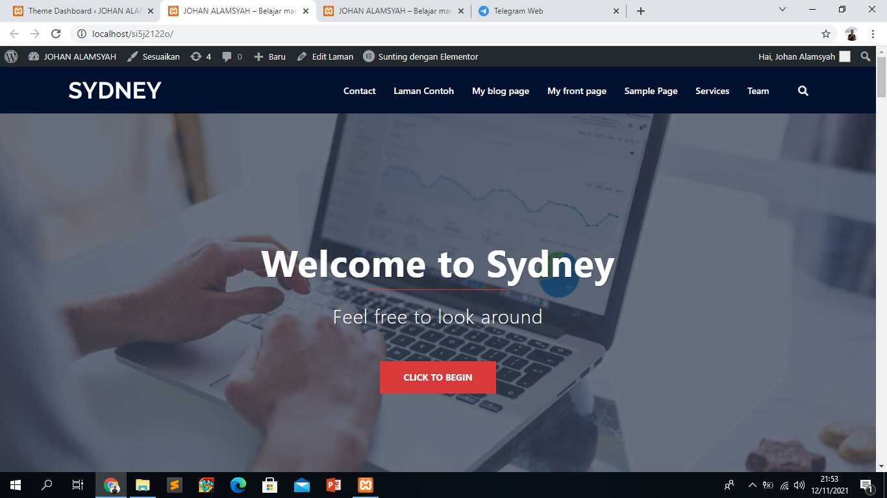
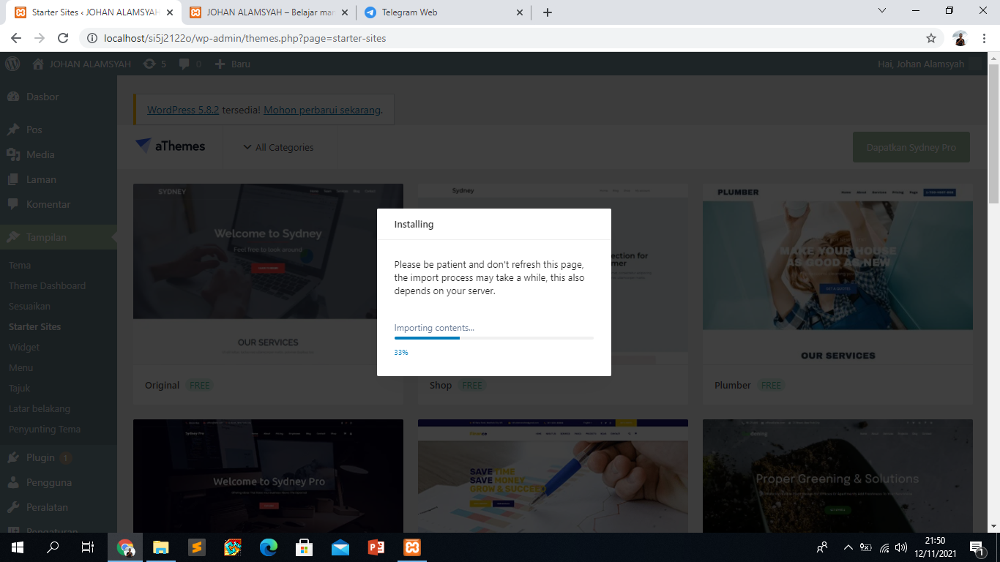
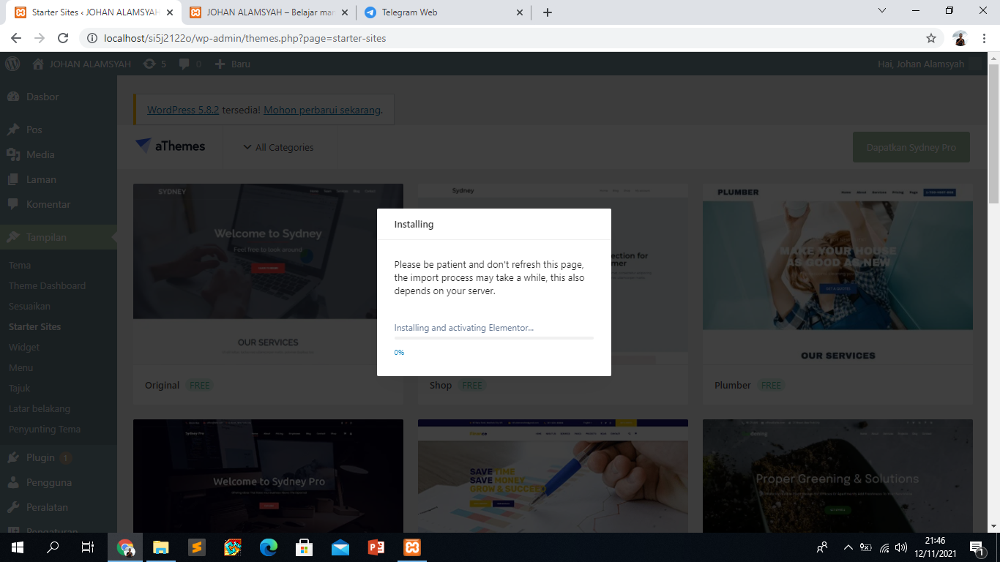
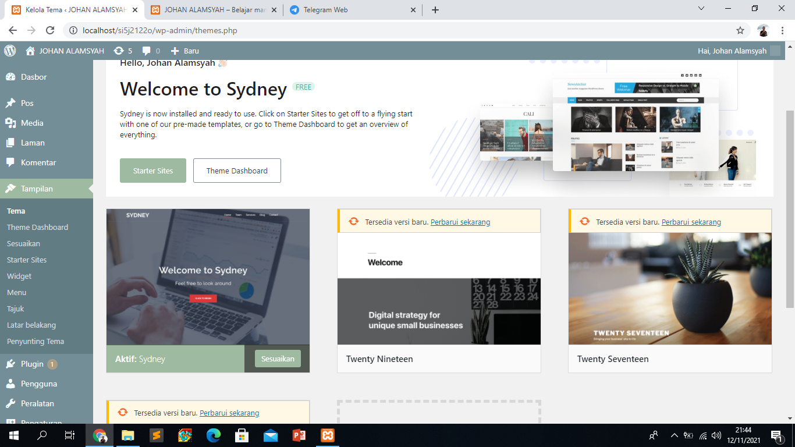
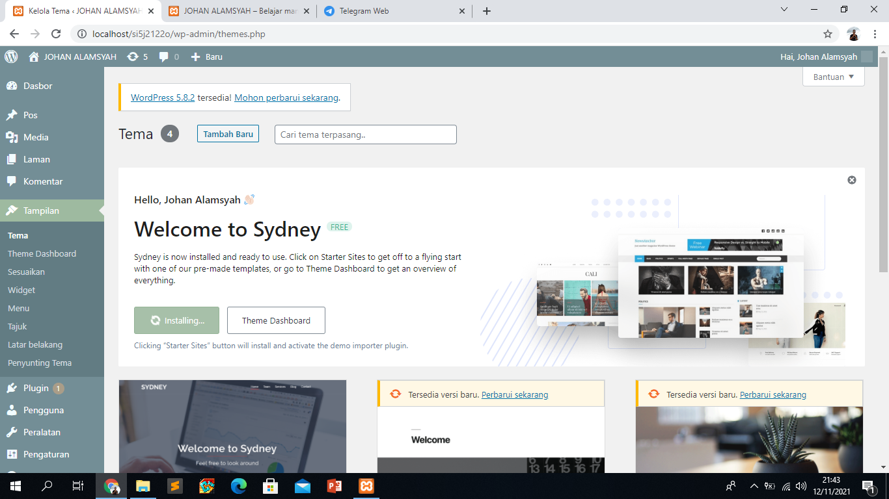

NIM = 19222500193
NAMA = Johan Alamsyah
Kelompok = SI5J
kesimpulan atau hasil pertemuan 4 yang saya ambil adalah:
- di dalam htdocs, mesti ada folder si5j2122o, sehingga pada browser bisa diakses dengan http://localhost/si5j2122o
- jika object not found (404), maka cek dulu nama folder antara htdocs dengan yang diketik di localhost
- jika ada tulisan error establishing database connection, cek dulu apakah mysql sudah running pada xampp control panel
- jika sudah running, buka wp-config.php pada folder si5j2122o, dan cek db_name. db name ini pastikan ada di phpmyadmin
- jika pada phpmyadmin belum ada nama databasenya, maka import dulu file sql bahan pertemuan ke 2 (hasil pertemuan ke 1)
- wordpress memiliki 2 sisi, 1 tampilan backend (untuk admin/dashboard) dan 1 nya lagi tampilan front end (untuk pengunjung/client area)
- untuk backend, harus login dulu di alamat http://localhost/si5j2122o/wp-admin
- dipertemuan 3 kali ini kita membuat post baru lalu membuat tema atau cerita yang ingnin kita sampaikan diweb kita tersebut,kemudian kita tambah kan foto seperti bisa lewat link dan lewat unggah foto
- setelah foto sudah diupload bisa diatur gambarnya,kemudian setelah itu kita mengupload vidio bisa dari link dan bisa dari unggahan file yang sudah kita simpan,setelah itu upload vidio youtube
- dan kita bisa juga menambah kategori seperti kategori populer,terendi,dll
- kemudian setelah itu kita tambah kan menu
- dipertemuan 4 kali ini kita membuka widget,dan menginstal widget contohnya : classic-widget
- kemudian setelah itu kita membuka tampilan tema lalu mencari tema web yang ingin kita gunakan,jika sudah menemukan tema yang kita gunakan klik instal lalu aktifkan









